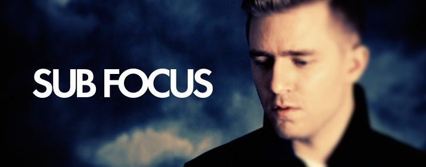

Club Circus
Sub Focus ist der Künstlername des englischen Drum-and-Bass-Musikers und - Produzenten Nick Douwma.
Douwma, der aus Liverpool stammt, produzierte schon Musik auf dem heimischen PC seit er 13 war.
Er schaffte 2005 mit X-Ray Scarecrow seinen Durchbruch und kam damit sogar in die britischen Charts.
In den folgenden Jahren etablierte er sich nicht nur mit eigenen Veröffentlichungen, sondern auch
als Remixer und DJ z.B. im renommierten Londoner Club Fabric oder beim Glastonbury Festival.
Vielen EDM Fans wird der Song The Island im Steve Angello Remix bekannt sein, der unter anderem
auch Teil der One Last Tour Shows der Swedish House Mafia war.